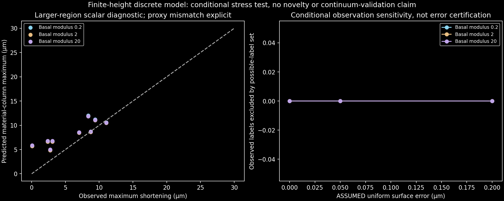

First coupled model: executed, but spatial adequacy fails
This is the retained v1 finite-height nonlinear axisymmetric model. It is a conditional mechanical stress test, not a new biological discovery. Its original sources, calibration, 93 larger-region fields and frozen hashes remain unchanged while a separate prestress revision is developed.
What was fitted and what was held out
Only the 17 small-region dose/maximum-shortening values fit one activation gain per declared basal-area-modulus scenario. All use height 33.5 µm, a flat stress-free reference, finite thickness, an activation depth 5–25 µm below the apical surface, and the same outer boundary. Parameters are exploratory scenarios, not independently measured bounds or a complete identified set.
The field observation used for calibration is the maximum vertical shortening of matched material columns. It is an explicitly conditional peak-equilibrium proxy, not automatically the source's current-spatial/time-maximum measurement. Separate small-region apical and basal maxima are used as an independent adequacy check, not added together or silently promoted to paired trajectories.
| Basal area modulus / µh | Fitted gain | Direct small-region height-proxy RMSE (µm) | Larger-region scalar RMSE (µm), n=9 |
|---|---|---|---|
| 0.2 | 8.66 | 2.2472 | 3.0881 |
| 2 | 8.88 | 2.2558 | 3.0477 |
| 20 | 9.50 | 2.2694 | 3.1503 |
The nonlinear-response interpolation used for fitting was checked against 51 direct small-region solves; maximum discrepancies are 0.01126, 0.01107 and 0.00784 µm, below the predeclared 0.05-µm calibration-surrogate tolerance. These are checks at the selected gains, not a uniform interpolation certificate or proof of a continuous-parameter optimum.
The decisive training-only failure
Every scenario predicts basal motion larger than apical motion in all 17 small-region records. The source component maxima are apical-dominant in 16 of 17. Component ordering agrees in only 1/17, despite a reasonable scalar shortening fit. Apical-component RMSE is 5.25–5.64 µm; basal-component RMSE is 3.36–3.80 µm. The static-versus-temporal-maxima mismatch limits a formal biological falsification, but the declared family plainly has not established small-region spatial adequacy. Independent component audit; observation qualifications.
The larger-region runs are therefore retained as diagnostics of an already inadequate candidate, not advertised as validated forecasts. Their scalar errors are also worse than the frozen calibration-only linear comparator's 2.2270 µm.

Why zero label exclusions is not predictive success
All 31 larger-region cases in every branch allow both image labels when acquisition slice height is unknown, for each reported illustrative surface-error assumption. Consequently no observed label is excluded, but the label test is non-discriminating. It does not have 100% accuracy. A physical surface that permits a plug-like slice does not determine whether the actual recorded slice intersected it. The source phenotype is also transient; a static calculation does not establish its peak or recovery time. Exact conditional observer and error bound.
The assumed 0, 0.05 and 0.2 µm uniform surface errors in the diagnostic figure are sensitivity scenarios. None is a measured error or a finite-element continuum certificate.
What the numerical receipts prove
All 93 larger-region solves meet the locked normalized nodal-force tolerance, with maximum residual below . Exact rational checks independently verify the 51 calibrated and 93 larger-region P1 bodies: triangle orientation, disk topology, simple boundary, axis preservation, local Jacobian bounds and volume ratios. This establishes valid, noninterpenetrating discrete geometries, not closeness to the unknown continuum solution. Proof and certificate.
Local Jacobians reach approximately 0.797 in the larger-region fields, corresponding to about 20% local material-volume compression. Small global volume loss does not remove that problem. The log-volume penalty coefficient divided by shear modulus is 50; that does not guarantee near incompressibility when fitted activation is large. Mesh sensitivity is substantial even at low activation. Neither material biology nor continuum accuracy has been validated.
The justified revision
A stress-free area-elastic membrane gives no quadratic normal stiffness about a flat surface. For a normal graph ,
Baseline membrane tension instead contributes
This standard geometric-stiffness distinction motivates a separate, small-region-driven prestress revision. It does not prove that the revision will fit the biology or solve compressibility. A mixed higher-order numerical model and matched mesh/penalty tests are also being developed before stronger continuum claims.
Five-gate status
Originality and data-availability audits are executed. The coupled discrete model, calibration and conditional larger-region fields now exist and are independently checked. The original stronger gates remain incomplete: the material identified set is not characterized, specimen geometry and source acquisition mapping are missing, the current candidate fails spatial calibration adequacy, and continuum accuracy is unresolved. A correct diagnostic computation is not a passed biological prediction or confirmed novelty.